Touch — Campaign Creation Flow
Designed an end-to-end campaign creation flow in Touch that lets marketing managers build, configure, and publish multi-channel communication campaigns — with A/B testing and approval routing in one unified interface.
- ◆ Context
- Touch — internal CVM / marketing automation platform for financial services
- ◆ Task
- Design the end-to-end campaign creation journey: setup, audiences, content, and scenario orchestration
- ◆ Goal
- Reduce campaign time-to-launch by centralizing targeting, creative production, A/B configuration, and approvals
- ◆ Constraints
- Multi-role creative approval gates (Editor, Designer, Technologist); 7+ channel formats; regulated financial services context
- ◆ Role
- Lead Product Designer — UX/UI, flow architecture, creative builder, scenario canvas
- ◆ Team
- PM, marketing managers, engineering, content platform, data
- ◆ Scope
- 4-stage wizard (About → Audiences → Content → Scenarios), creative builder with AI generation, visual scenario canvas with A/B splits
- ◆ Metrics
- NDA — directional: fewer tool handoffs, single interface from brief to publish
- ◆ Status
- Shipped
- ◆ Tools
- Figma
Designers
-

Vova Kirilyuk
Main designer
-

Alex
Co-designer
-
Rita
Co-designer
-
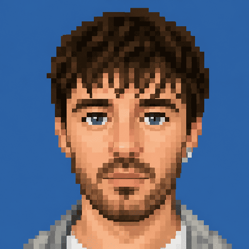
Serge
Co-designer
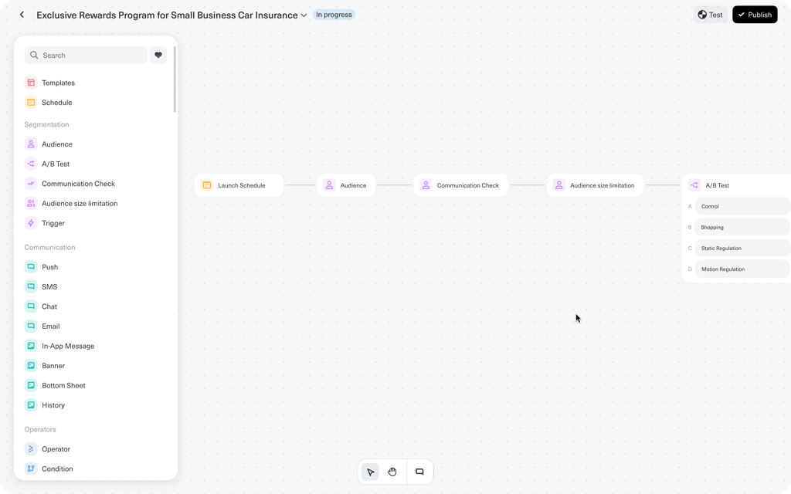
Overview
Touch is an internal CVM and marketing automation platform used by marketing managers at a financial services company. Campaigns like Exclusive Rewards Program for Small Business Car Insurance need coordinated audience targeting, multi-channel creatives, A/B test configuration, and compliance-aware approval — work that previously scattered across disconnected tools.
I designed a structured four-stage creation flow — About → Audiences → Content → Scenarios — that carries a campaign from metadata and hypothesis through audience attachment, creative production, and visual scenario orchestration. AI-assisted analysis and generation, multi-role approval routing, and a node-based canvas with first-class A/B testing are embedded in the journey rather than bolted on as separate settings.
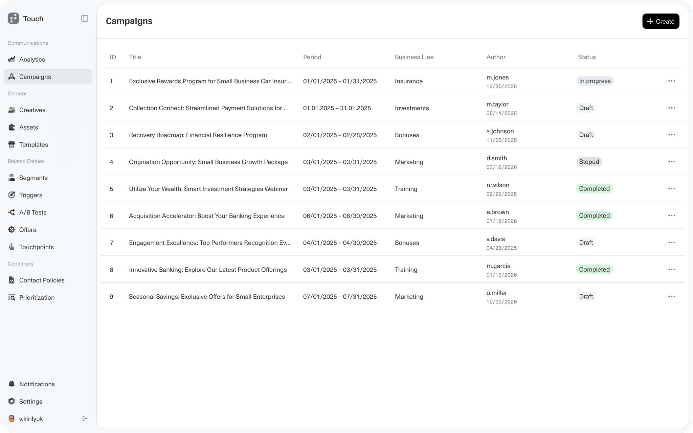
Problem
- Marketing managers stitched together audience tools, creative builders, and send orchestration across disconnected systems — each handoff added delay and context loss.
- Multi-channel campaigns (Push, SMS, Email, In-App, Banner, etc.) required repeating setup work per channel instead of configuring from one canvas.
- A/B testing lived outside the main workflow, making split configuration and branch-level communication mapping cumbersome.
- Creative approval (Editor, Designer, Technologist) was decoupled from the builder, so review cycles restarted when content changed mid-flow.
Solution
A top-navigated wizard anchors the journey; each stage owns a distinct job while sharing context with the stages that follow.
1. Campaign Setup (About) — Metadata capture: type (Promotion), business line (Insurance), team, hypothesis, risks, and business value. A right-side panel surfaces an AI-powered Analysis module plus links to an Approval workflow and a visual Board.
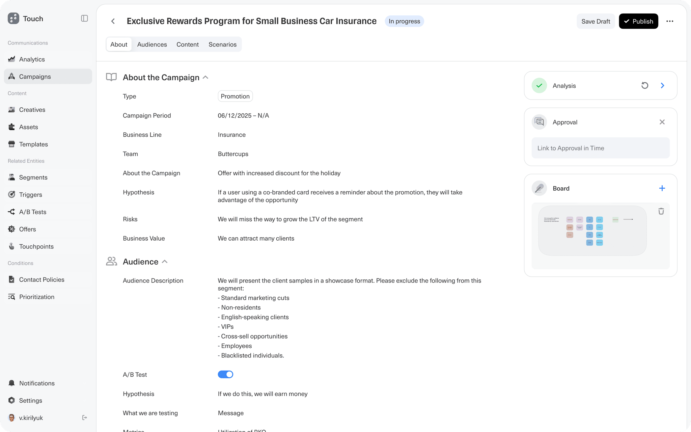
2. Audience Configuration — Audiences are assembled and attached to the campaign. Each entry (e.g. Company Employees, ID 63912) shows volume (350,000 users), tags, business key, and exportable parameters. Segments drill deeper via T-segments integration.
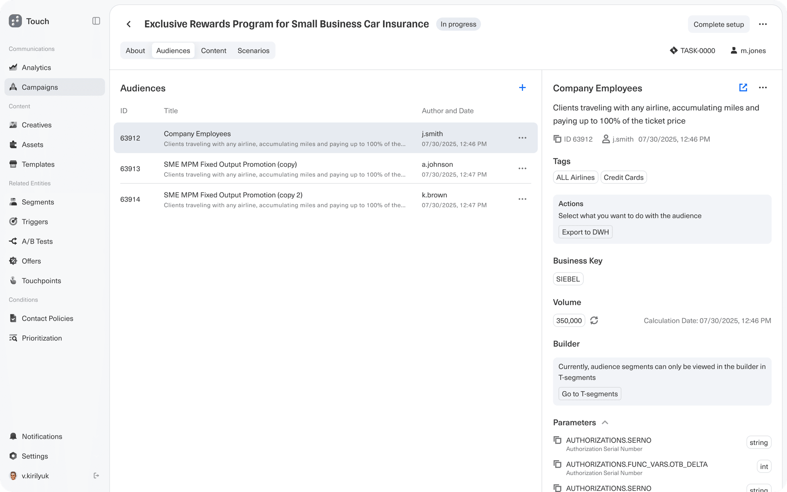
3. Content & Creatives — Creatives are authored or AI-generated in the builder. Supported formats: Push, SMS, Chat, Email, In-App Message, Banner, Bottom Sheet, and History. Creatives pass through a multi-role approval gate before activation.
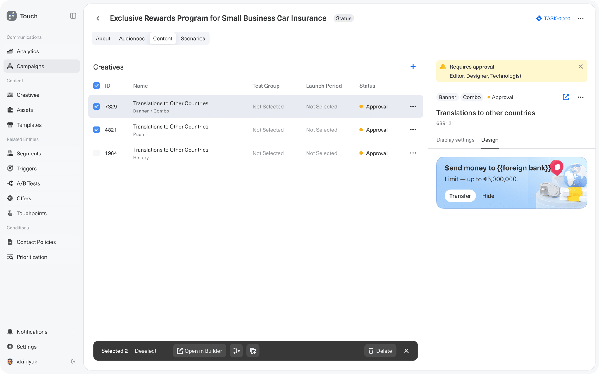
4. Scenario Builder (Visual Canvas) — A node-based flow editor connects Launch Schedule → Audience → Communication Check → Audience Size Limitation → A/B Test. The A/B node splits into Control, Shopping, Static Regulation, and Motion Regulation (25% each); each branch wires to channel-specific communication nodes. Components drag in from a left-side panel; multi-channel selection opens in a single modal to keep the canvas uncluttered.
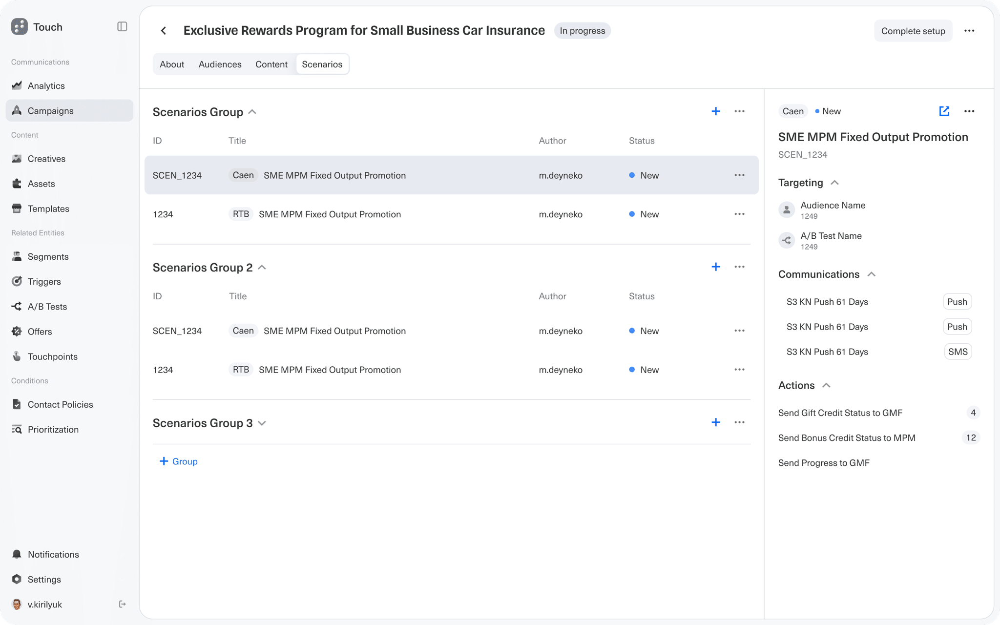
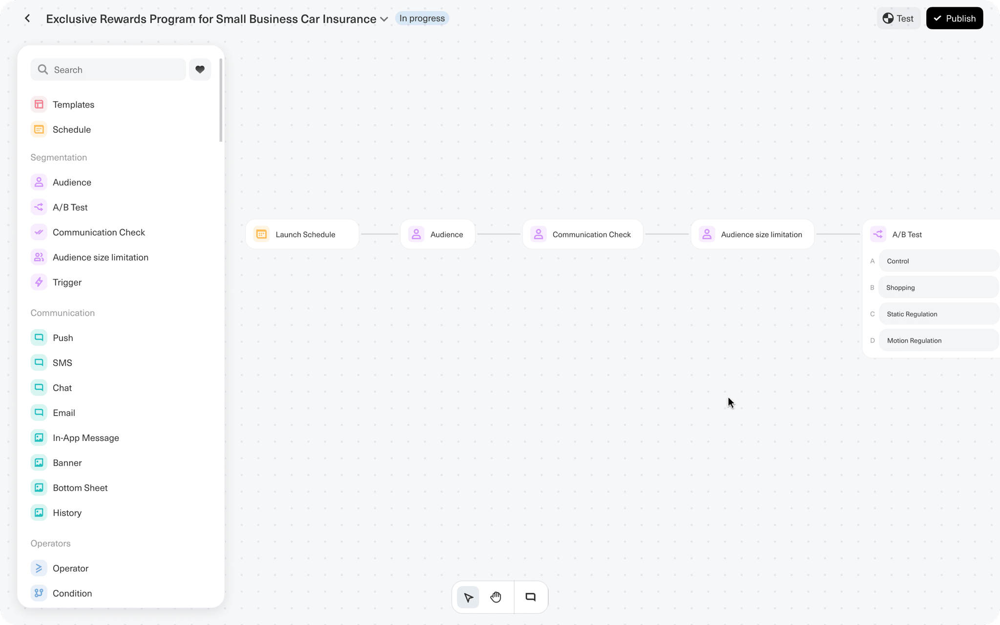
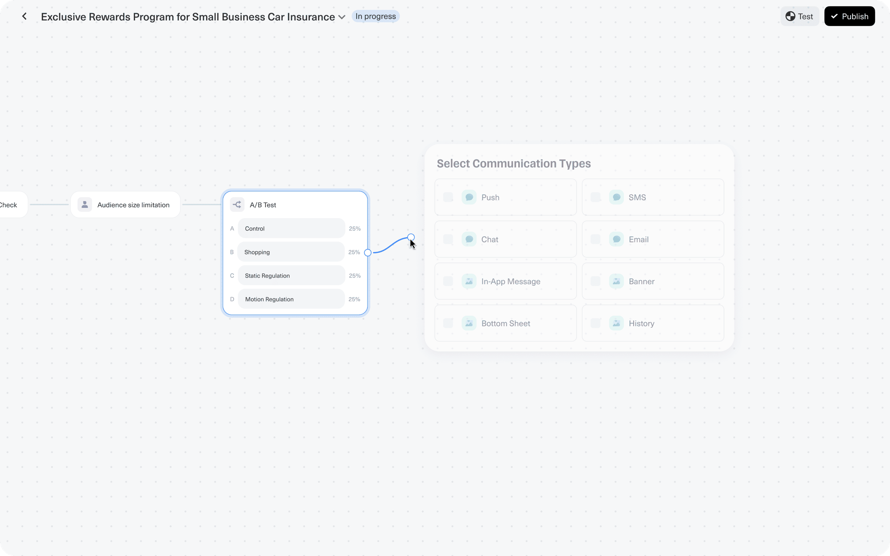
Creative builder detail — Marketers configure banner messages with dynamic variables (e.g. {{foreign bank}}), select required UI elements (Badge, Two Buttons, Image, Icon, Progress Bar), describe image assets for AI generation, and attach reference files. A Collect Creatives action bundles everything for review.
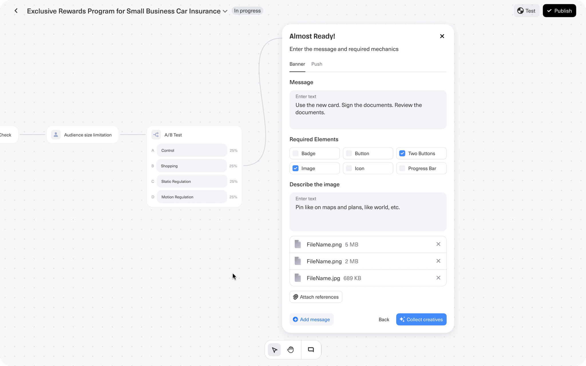
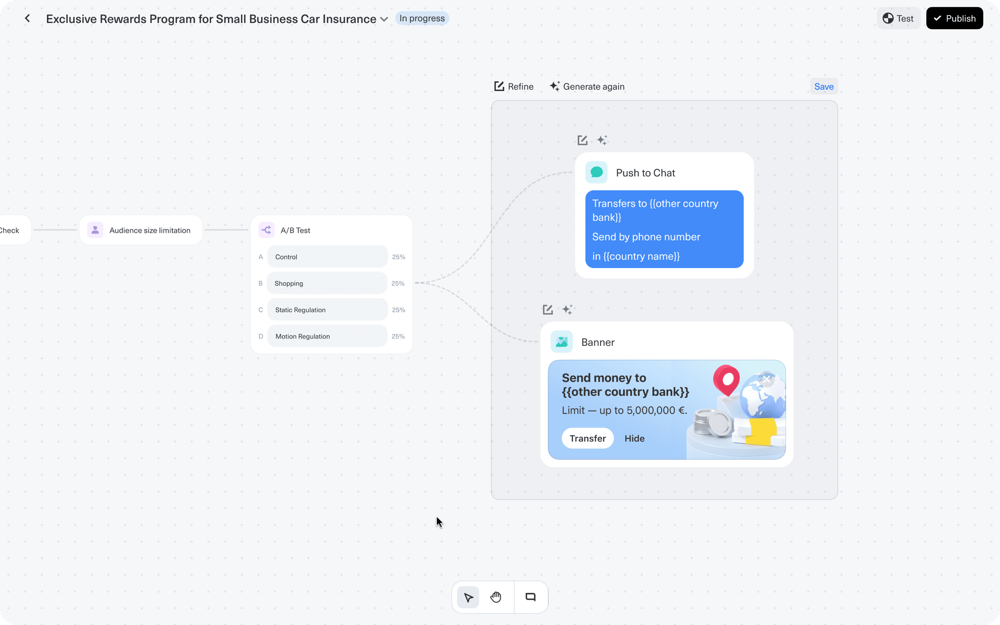
Impact
The flow reduces campaign time-to-launch by centralizing audience targeting, creative production, A/B test configuration, and approval routing into a single unified interface — eliminating handoffs between disconnected tools.